Internal use only. This package is developed for the OBIS Secretariat and OBIS nodes. The API may change without notice as internal workflows evolve.
obisrecipes is an R package of reusable visualization and mapping functions for Ocean Biodiversity Information System (OBIS) data. It covers three areas:
- ggplot2 styles — a light theme, a dark marine theme, colorblind-safe color scales, a horizontal colourbar guide, and an OBIS/IOC logo overlay.
- Static maps — ggplot2-based world basemaps, grid converters (geohash, H3, A5), and an occurrence layer for plotting species distributions.
-
Dynamic maps — interactive WebGL maps via
mapgl, a DeckGL H3 hexagon widget, and helpers for adding species data and map controls.
Installation
Install the development version from GitHub:
# install.packages("pak")
pak::pak("iobis/obis-recipes")Quick start
ggplot2 styles
library(obisrecipes)
library(ggplot2)
library(robis)
suppressPackageStartupMessages(library(dplyr))
obis_load_fonts() # Call once per session
occ_acch <- occurrence(taxonid = 159580, startdate = "2010-01-01")
#>
Retrieved 5000 records of approximately 20018 (24%)
Retrieved 10000 records of
#> approximately 20018 (49%)
Retrieved 15000 records of approximately 20018
#> (74%)
Retrieved 20000 records of approximately 20018 (99%)
Retrieved 20018
#> records of approximately 20018 (100%)
ggplot(occ_acch, aes(sst, depth)) +
geom_point(size = 2.5, color = "#188eb6", alpha = .2) +
scale_color_obis_cat() +
labs(title = "Acanthurus chirurgus",
subtitle = "doctorfish",
x = "SST", y = "Depth (in m)") +
theme_obis(legend_position = "bottom")
#> Warning: Removed 881 rows containing missing values or values outside the scale range
#> (`geom_point()`).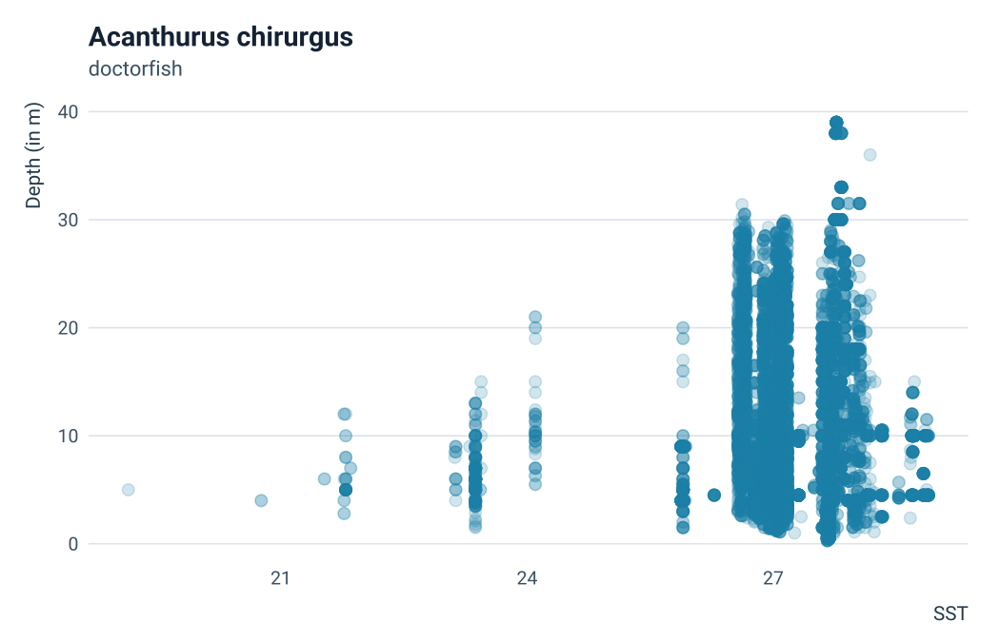
occ_acan <- occurrence(
taxonid = 125515, startdate = "2015-01-01",
geometry = "POLYGON ((-81.5625 31.653381, -97.910156 30.448674,
-99.492188 21.125498, -92.460937 16.636192,
-83.847656 11.005904, -74.707031 7.188101,
-58.710938 7.536764, -52.910156 13.068777,
-61.171875 28.767659, -73.125 34.016242,
-81.5625 31.653381))"
)
#>
Retrieved 5000 records of approximately 38569 (12%)
Retrieved 10000 records of
#> approximately 38569 (25%)
Retrieved 15000 records of approximately 38569
#> (38%)
Retrieved 20000 records of approximately 38569 (51%)
Retrieved 25000
#> records of approximately 38569 (64%)
Retrieved 30000 records of approximately
#> 38569 (77%)
Retrieved 35000 records of approximately 38569 (90%)
Retrieved 38569
#> records of approximately 38569 (100%)
occ_acan_agg <- occ_acan |>
group_by(date_year, species) |>
summarise(Records = n()) |>
rename(Year = date_year, Species = species) |>
filter(!is.na(Species))
#> `summarise()` has regrouped the output.
#> ℹ Summaries were computed grouped by date_year and species.
#> ℹ Output is grouped by date_year.
#> ℹ Use `summarise(.groups = "drop_last")` to silence this message.
#> ℹ Use `summarise(.by = c(date_year, species))` for per-operation grouping
#> (`?dplyr::dplyr_by`) instead.
ggplot(occ_acan_agg, aes(Year, Records, fill = Species)) +
geom_bar(stat = "identity", position="dodge") +
scale_fill_obis_cat() +
labs(title = "Acanthuridae",
subtitle = "surgeonfishes",
caption = "Limited to a region in the Caribbean and starting in 2010",
x = "Year", y = "Records") +
theme_obis(legend_position = "bottom")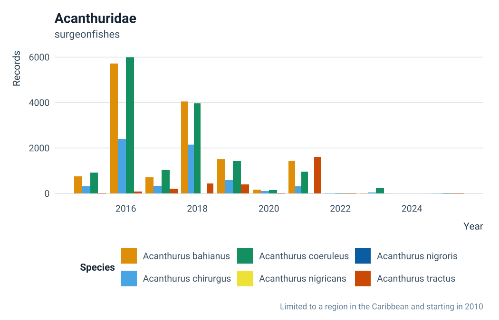
Colorbars
sst_caribbean_bo <- terra::rast(
"https://erddap.bio-oracle.org/erddap/griddap/thetao_baseline_2000_2019_depthsurf.nc?thetao_mean%5B(2010-01-01T00:00:00Z):1:(2010-01-01T00:00:00Z)%5D%5B(0.025):1:(43.025)%5D%5B(-103.975):1:(-37.975)%5D"
)
sst_caribbean_bo <- terra::aggregate(sst_caribbean_bo, 4) |>
as.data.frame(xy = T)
ggplot(sst_caribbean_bo) +
geom_raster(aes(x = x, y = y, fill = thetao_mean)) +
scale_fill_obis_cont(palette = "thermal") +
guides(fill = guide_colourbar_h(title = "Temperature (°C)",
barwidth = grid::unit(14, "lines"))) +
labs(x = NULL, y = NULL, title = "Sea surface temperature - average") +
scale_x_continuous(expand = F) +
scale_y_continuous(expand = F) +
theme_obis(legend_position = "bottom") +
theme(panel.grid = element_blank()) +
coord_equal()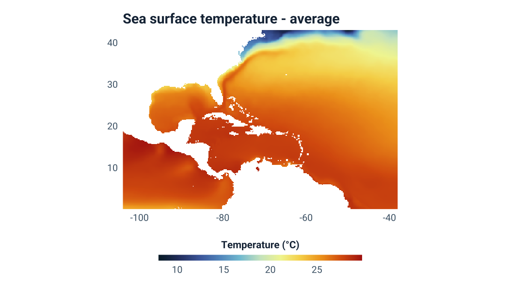
ggplot(sst_caribbean_bo) +
geom_raster(aes(x = x, y = y, fill = thetao_mean)) +
scale_fill_obis_cont(palette = "thermal") +
guides(fill = guide_colourbar_h(title = "Temperature (°C)",
barwidth = grid::unit(14, "lines"))) +
labs(x = NULL, y = NULL, title = "Sea surface temperature - average") +
scale_x_continuous(expand = F) +
scale_y_continuous(expand = F) +
theme_obis_dark(legend_position = "bottom") +
theme(panel.grid = element_blank()) +
coord_equal()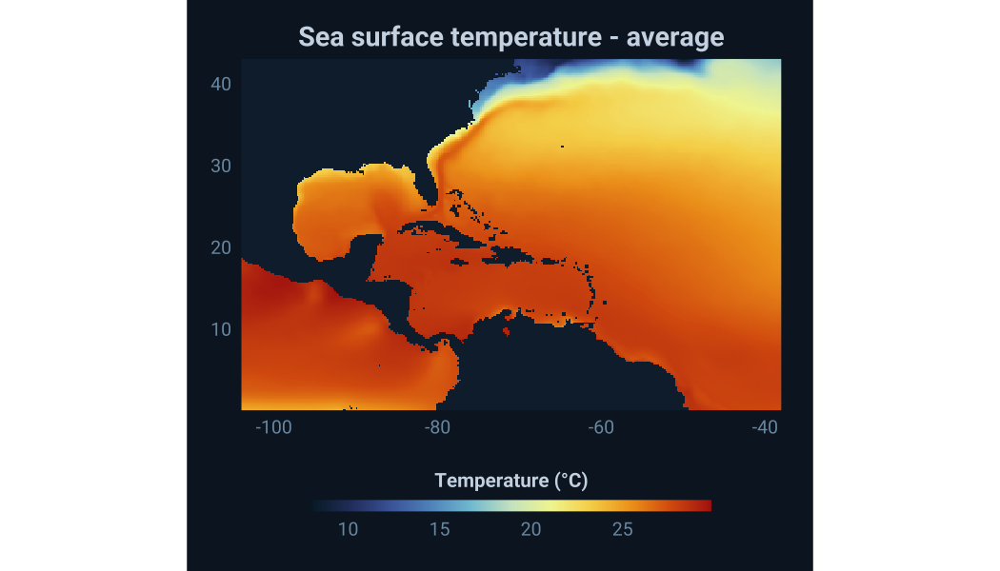
Static maps
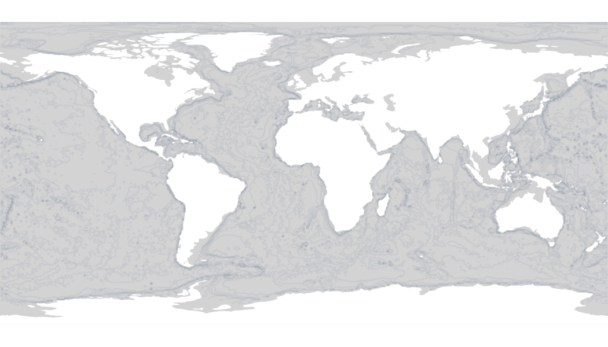
Focused regional view with gridded occurrence data:
grey_map_s() |>
add_species_data_s(
grid_data = occ_to_geohashgrid(occ_acch, grid_res = 3),
limit_by_bbox = FALSE,
plot_xlim = c(-90, -34),
plot_ylim = c(-28, 43)
)
#> Coordinate system already present.
#> ℹ Adding new coordinate system, which will replace the existing one.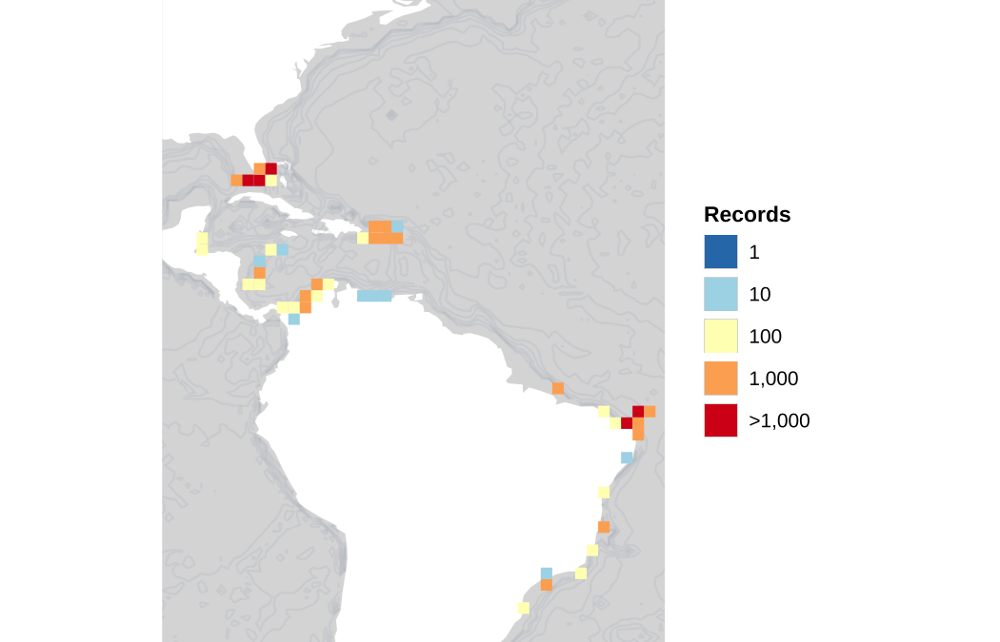
Dynamic maps
Dynamic maps require an internet connection and render as interactive widgets. Run interactively in RStudio or embed in R Markdown / Quarto documents:
grey_map() |>
add_species_data(taxonid = 126436, legend = TRUE)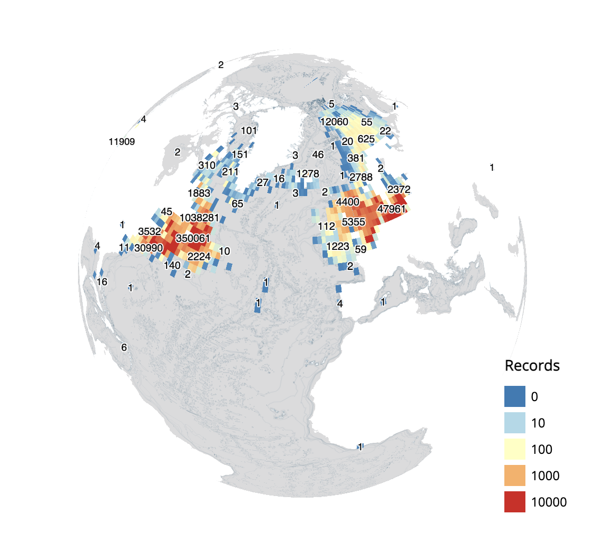
grey_map(projection = "mercator") |>
add_species_data(taxonid = 126436, legend = TRUE)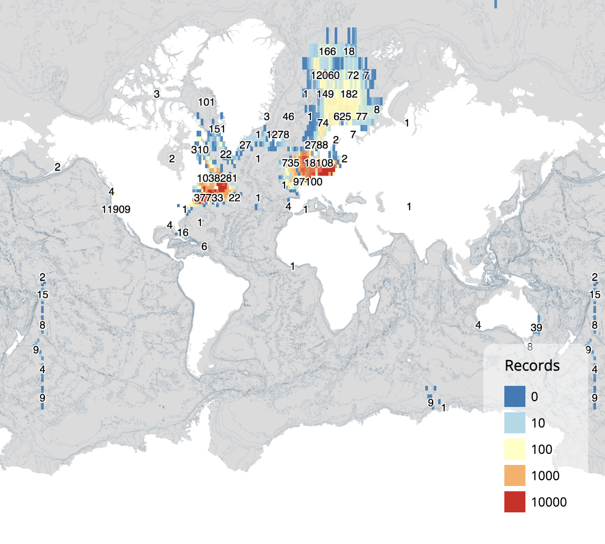
Using H3 grid (first example uses h3j source from the mapgl package, and is not suitable for very large datasets. For larger datasets uses the H3 DeckGL widget, the second and third examples).
library(duckdb)
library(h3jsr)
library(dplyr)
con <- dbConnect(duckdb())
df <- dbGetQuery(con, "
SELECT records, cell
FROM read_parquet('s3://obis-products/speciesgrids/h3_7/*')
WHERE species = 'Minuca rapax'
")
df <- df |>
mutate(h3 = h3jsr::get_parent(cell, 3)) |>
group_by(h3) |>
summarise(value = sum(records))
# inline H3
blank_map(projection = "mercator") |>
add_h3j_source_inline("h3source", df = df, h3_col = "h3") |>
mapgl::add_fill_layer(
id = "h3layer",
source = "h3source",
fill_color = mapgl::interpolate(
column = "value",
values = c(0, 5, 10, 15, 20),
stops = c("#2c7bb6", "#abd9e9", "#ffffbf", "#fdae61", "#d7191c")
),
fill_opacity = 0.8
) |>
mapgl::fit_bounds(get_species_extent(taxonid = 955271))
# DeckGL
maplibre_h3(df, center = c(-50, -10), zoom = 2)
# DeckGL with extrusion
maplibre_h3(df, center = c(-50, -10), extruded = TRUE, elevation_scale = 3000)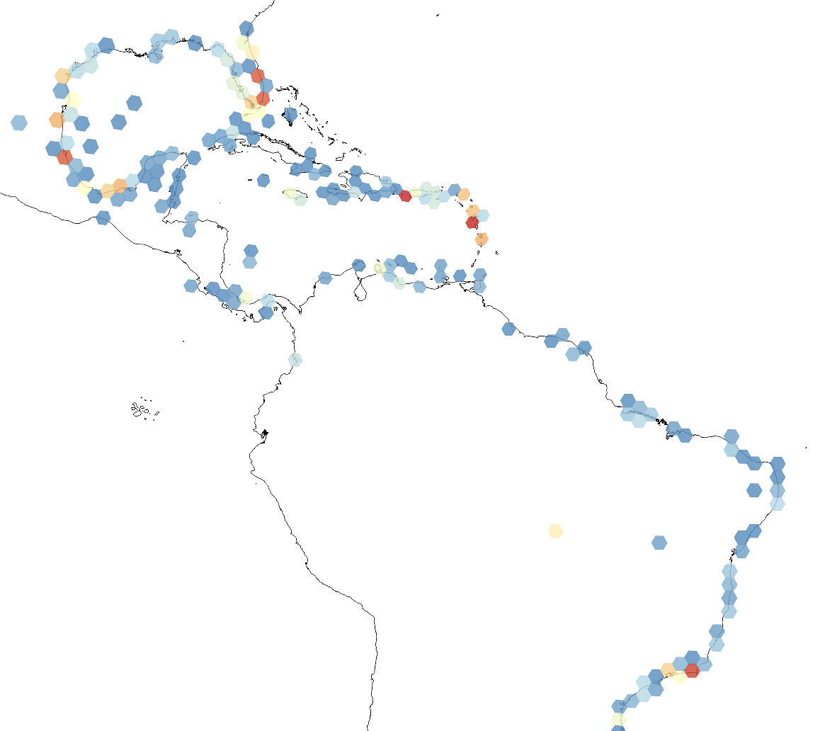
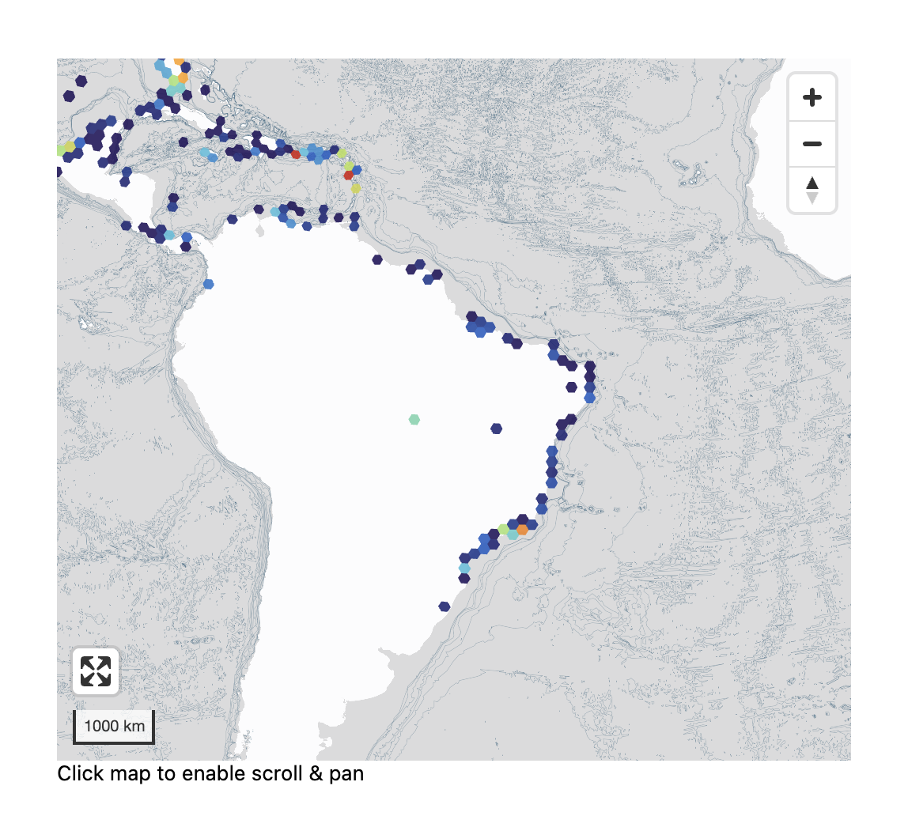
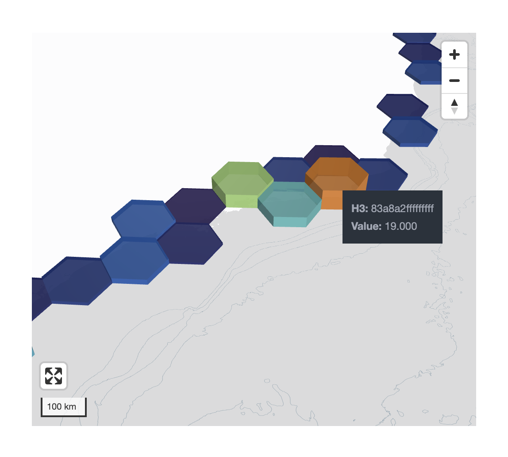
Vignettes
| Vignette | Topic |
|---|---|
vignette("ggplot-styles", package = "obisrecipes") |
Themes, color scales, colourbar guide, logo overlay |
vignette("static-maps", package = "obisrecipes") |
Basemaps, grid converters, offline and API-based plotting |
vignette("dynamic-maps", package = "obisrecipes") |
Interactive WebGL maps and the H3 widget |
Development
# Load all functions without installing
devtools::load_all(".")
# Render README
devtools::build_readme()
# Build vignettes
devtools::build_vignettes()Developed by the OBIS Secretariat · Operating under the Intergovernmental Oceanographic Commission (IOC) of UNESCO.